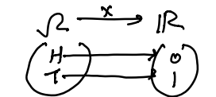
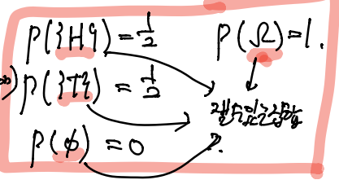
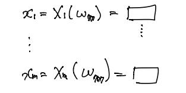
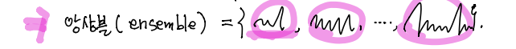
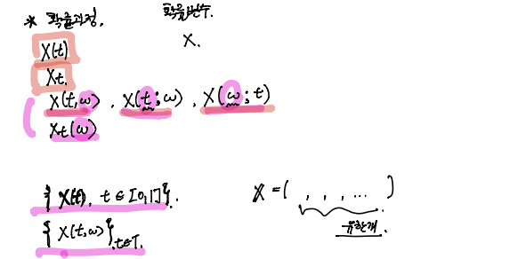
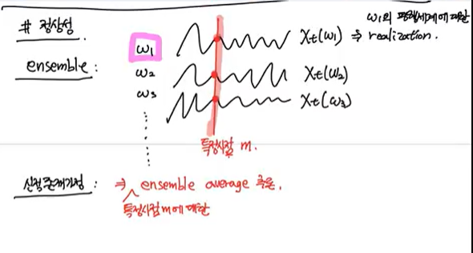
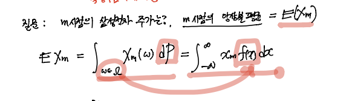
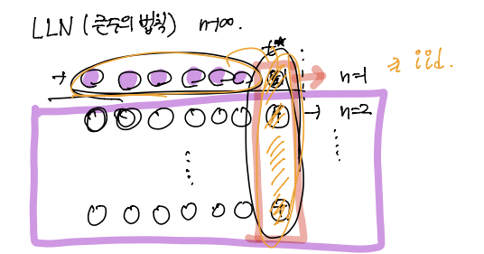
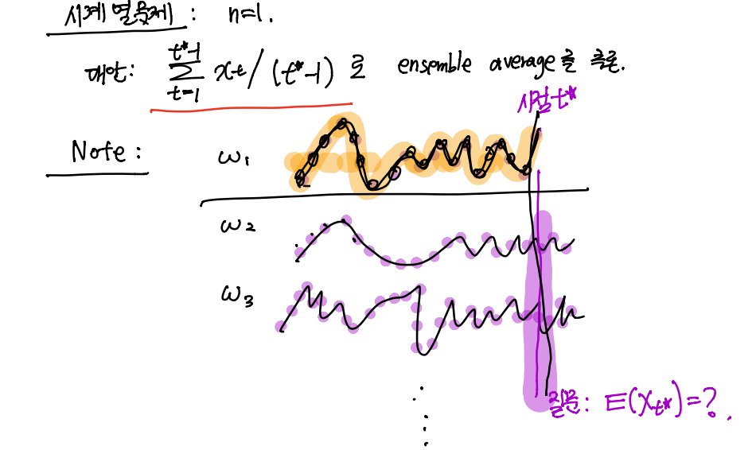

확률변수: (조금 특별한 성질을 가진) 함수
- 정의역: \(\Omega\)
- 치역: \(\mathbb{R}\)의 부분집합
동전예제
\(\Omega = \{H,T\}\)
\(X: \Omega \to \mathbb{R}\)

- 기호
집합: \(\Omega\), 원소: \(w\), \(\quad w\in \Omega\)
\(\Omega = \{H,T\} = \{w_1,w_2\}\)
\(X(w_1) = X(H)=0, X(w_2) = X(T)=1\)
- 주의
- \(X: \Omega \to \mathbb{R}\)
- \(P: \cal{F} \to [0,1]\) (set function)
(참고) \(\cal{F}\): \(\Omega\)의 부분집합 중 잴 수 있는 집합의 모임.

확률변수에 대한 오해: 확률변수 = 값이 랜덤하게 바뀌는 변수
“확률변수는 (특별한 성질을 가진) 함수다!”
함수: \(\begin{align*}&y=f(x), \quad f: \text{function}, x: \text{input}, y:\text{outcome}\\ & x=X(w) \quad X: \text{random variable}, w: \text{outcome}, x: \text{realization}\end{align*}\)
보통 \(X(w)\)에서 \((w)\)를 생략하고, 간단히 \(X\)로 표시 \(\to\) 혼란의 이유!
“확률변수는 결과가 랜덤으로 변한다.”
1 맵핑규칙은 변화없음.
- \(H\to 0 \quad w_1 \to 0\)
- \(T\to 1 \quad w_2 \to 1\)
2 입력. 즉, outcome은 실험결과에 따라 랜덤으로 변한다.
예제1
w.p는 with probability를 의미.
확률변수 \(X = \begin{cases} 0, & \text{w.p. } \frac{1}{2} \\ 1 & \text{w.p. } \frac{1}{2}\end{cases}\)
(i) \(X\)는 변수처럼 보임.
(ii) 변수의 값이 랜덤으로 변하는 것 같음
\(X(w) = \begin{cases} 0, & w\in \{H\} \\ 1, & w\in \{T\} \end{cases}\)
요약
- 확률변수는 확률과 관련 없다.
- 간접적으로는 관련있다. (\(\therefore\) \(X\)의 역상 \(= \Omega\)의 부분집합 \(=P\)의 정의역)
질문: 확률변수 X의 모든 역상에 대하여 확률을 모순없이! 정의가능?
- 시계예제
\(\Omega=[0,2\pi) \qquad X: [0,2\pi)\to [0,2\pi)\)인 항등함수.
\(X\)는 항등함수 \(\Rightarrow\) 비탈리 집합의 역상은 비탈리집합 \(\Rightarrow\) 확률을 정의할 수 X
합의
“확률변수 \(X\)를 그냥 함수가 아니라, 역상이 measurable set이 되는 함수라 하자.” \(\Leftrightarrow\) \(X\)를 가측함수1라고 하자.
시계열
- 확률변수 \(X\): \(\Omega\to \mathbb{R}\)인 특별한 함수.
- 확률벡터 \(\bf{X}: \Omega\to \mathbb{R}^m\)인 특별한 함수
- 기호
확률변수: \(X(w) = x\)
확률벡터: \(\bf{X}(w) = (x_1,\dots, x_m)\) \(\to\) 출력이 벡터임을 강조!
확률변수: \(X\)
확률벡터: \(\mathbf{X} = (X_1,\dots,X_m), \quad X_1,\dots,X_m\)은 \(r.v.\)
\(\therefore \bf{X} = (X_1,\dots, X_m)(w) = (X_1(w),\dots,X_m(w))=(x_1,\dots,x_m)\)
\(x_1 = \text{2019-03-20} \\ x_2 = \text{2019-03-21} \\ \qquad \vdots\)
\(\therefore x_1,\dots, x_m \Rightarrow \text{2019-03-20}\) 부터 순서대로 \(m\)개의 삼전주식값을 나열
Note! : \(w\)만 알면 \(x_1,\dots,x_m\)의 값이 저절로 결정.
\(X_1(w) = x_1 \\ X_2(w) = x_2,\\ \qquad \vdots\)
- 가능한 설명모형
\(14,000,605\) 개의 평행세계
우리는 이 중 하나의 세계에 \(\frac{1}{14,000,605}\)의 “확률”로 선택되어져 살고있음.
\(\Rightarrow \Omega=\{w_1,w_2,\dots, w_{14,000,605}\}\)
\(P(\{w_1\})=P(\{w_2\})=\dots=P(\{w_{14,000,605}\})=\frac{1}{14,000,605}\)
- 하나의 평행세계가 선택 \(\Rightarrow\) 그 평행세계의 모든 사건이 이미 결정.
우리의 우주 \(=\) \(777\)번째 평행세계 \(\Rightarrow w=w_{777}\)

- 반론 : 미래는 고정되지 않음.
\(m+1\) 시점은 총 \(52,210-38,590=13,620\)개의 미래가 가능!
- 반론의 반론 : 처음부터 \(14,000,605 \times 13,620\) 의 미래를 고려.
\(m\)개의 삼전 주가 \(\Rightarrow 14,000,605\)
\(m+1\)개의 삼전주가 \(\Rightarrow 14,000,605 \times 13,620\)
- 동전 2회
\(\Omega = \{\{H,H\}, \{H,T\}\,\{T,H\}, \{T,T\}\}\)
\(\{H,H\}: w_1 \\ \{H,T\}:w_2 \\ \{T,H\}: w_3 \\ \{T,T\}:w_4\)
복습: 확률변수

기호정리
- 확률변수: \(X(w) = x\).
- 확률벡터: \(\bf{X}(w) = \left(X_1(w),\dots,X_m(w)\right)=(x_1,\dots,x_m)\)
- 확률과정: \(X(w,t) = x_t = x(t)\)
- 확률과정은 \(w\)와 \(t\)의 함수.
- \(X(w,t)\)를 \(X_t(w)\)로 표기하기도 함.
- 고정된 \(w \Rightarrow\) relization이 시간에 따른 함수
- 고정된 \(t \Rightarrow\) random variable이 함수
(참고) : 고정된 \(w\)에 대한 \(X(w,t)\)의 relization을 sample path 혹은 sample function이라고 부른다.
용어정리1 (\(\star\star\star\))
\(\Omega = \{w_1,\dots, w_{14,000,605}\}\) 이런 평행세계가 있다…

각각의 \(\omega\)에 매핑되는 함수(무한 개의 값들)가 있을 것이고, 시점을 \(t_0\)로 고정하면, 첫번째 평행세계에 대해서는 \(X(w_1, t_0)\), 두번째 평행세계에 대해서는 \(X(w_2, t_0)\), 세번째 평행세계에 대해서는 \(X(w_3, t_0)\)가 된다.
용어정리2
모든 \(\omega\)에 대하여 가능한 sample path를 모두 모은 뭉치. \(\Rightarrow\) 앙상블(ensemble)


앙상블 mean: 1번 timeseries, \(\dots\) 14,000,605번 timeseries를 다 더해서 평균을 낸 것
- 앙상블 mean : \(\sum_{i=1}^{14,000,605}\frac{1}{14,000,605}\times(w_i,t) \Rightarrow \sim\)어떤 함수값 (mean function이라고 표현을 많이 함.)

결국 확률변수 \(X(w)\)를 줄여서 \(X\)로 쓰고, 확률벡터 \(\bf{X}(w)\)를 줄여서 \(\bf{X}\)라 쓰고, 확률과정 \(X(w,t)\)를 줄여서 \(X(t)\)라고 쓴다.
- \(X(w) \to X\)
- \(\bf{X}(w) \to \bf{X}\)
- \(X(w,t) \to X(t)\) 또는 \(X_t\)
연속 시계열은 확률과정 그 자체이고, 이산 시계열은 원소의 수가 무한한 확률벡터라고 생각할 수 있다.우리가 많이 다루는 것은 이산 시계열이다.
시계열
시계열: 무한차원의 확률벡터 or. 확률과정의 smaple 버전이라고 생각할 수 있다. \((x_1, x_2, \dots, \dots)\)
\(\{Z_t(w), \quad t=1,2,\dots\}, \quad\) \(\omega\): 평행세계의 인덱스
교재의 표현정리
- 확률과정: \(X(t)\)
- 확률법칙: \(P\)
- 확률공간: \((\Omega,\cal{F}, P)\)
- 확률변수: \(X\)
- 확률변수의 모임: \(\bf{X}, X(t)\) \(\leftarrow\) 확률벡터나 확률과정 모두 의미.
- 집합 T: index set of random element2
- T의 원소가 1개이면 확률변수
- T의 원소가 유한개이면 확률벡터
- T의 원소가 무한개이면 확률과정
- 연속형 확률과정 \(= \{X(t), \quad t\in (0,\infty)\}\)
- 집합 T가 \((0,\infty)\)와 같이 구간으로 표현된 경우.
- 이산형 확률과정: (\(X_1,X_2,X_3,\dots), (\dots, X_{-1},X_0,X_1,X_2,\dots)\)
- 집합T가 \(\{1,2,3,\dots\}, \{\dots,-1,0,1,2,\dots\}\)
- 실현값 (realization)
- \(x\) : 확률변수의 relization
- \((x_1,\dots, x_m)\) : 확률벡터의 relization
- \(x(t)\) : 확률과정의 relization
- 표본통로 (sample path): \(x(t)\)
확률과정 노테이션 정리

정상성
정상성 가정이 안되면 시계열분석의 의미가 없다.


예제1. 동전 3번던지기
동전을 3번 던지면 나올 수 있는 모든 경우의 수는 8가지. 따라서 평행세계가 8개 있다고 하자.
\(\Omega = \{w_1,\dots,w_8\} = \{HHH,\dots, TTT\}\)
\(P(w_1) = P(w_2) = \dots = P(w_8)=\frac{1}{8}\)
$\bf{X}(HHH) = (X_1(HHH),X_2(HHH),X_3(HHH)) = (0,0,0) $확률벡터
$\bf{X}(TTT) = (X_1(TTT),X_2(TTT),X_3(TTT)) = (1,1,1) $확률벡터
- 동전을 무한번 던진다? \(\to\) 무한 개의 평행세계
\(X_t = (X_1,X_2,X_3,X_4,\dots) \leftarrow\) 이산형확률과정 (베르누이 과정)
\(x_t = (x_1,x_2,x_3,x_4,\dots) \leftarrow\) relization
동전을 평생던져야 함.
현실적인 관측 : \((x_1,\dots, x_{t^*-1})\leftarrow t^*-1\)
질문 : \(E(X+t^*)=\frac{1}{2}\times 0 + \frac{1}{2}\times 1 = \frac{1}{2}\)
디펜스 : 니가 동전이 공평한 동전인지 어떻게 아느냐?

계속 던지다 보니까 1/2이 나오잖아?
하지만 시계열 문제에서는 이런식으로 대답을 못한다. 왜냐? \(n\)이 하나밖에 없잖아..(반복실험 자체가 불가능하다.3)
시계열 문제 : \(n=1\)
대안: \(\sum_{t=1}^{t^*-1}x_t/(t^*-1)\)로 ensemble average를 추론.
\(\sum_{t=1}^{t^*-1}x_t/(t^*-1)\)를 time average라고 함.

iid 일경우 : time average로 ensemble average를 추론. (주황선)
\(\Rightarrow\) iid의 가정을 약화시키기 위한 노력이 필요함.
\(\Rightarrow\) 이러한 노력의 결과물이 stationary 가정임.
stationary 가정은 관측치끼리 독립일 필요도 없고 uncorrelated 되어야할 필요도 없다.
\(\Rightarrow\) 정상성가정이 없다면 \(\Rightarrow\) 시계열 분석을 할 이유가 없다.
- 에르고딕..
iid일 경우 단점 : 쓸모가 없다. iid를 가정할 수 있으면, 회귀분석을 돌리면 되는데 시계열을 돌릴 필요가 없다. iid가 안되기 때문에 시계열을 돌리는 것. > 과거의 사건이 현재의 사건과 correlation이 있다고 믿고, 독립이 아니라고 믿기 때문에 분석이 어려운 것..
결국 iid 보다 약한 가정을 찾다보니 stationary라는 가정이 생기게 됨.
Stationary 종류
Strictly Stationary
\(\{X_t\}\) is strictly stationary
\(\Leftrightarrow \forall t_1,\dots,t_n \in T\)